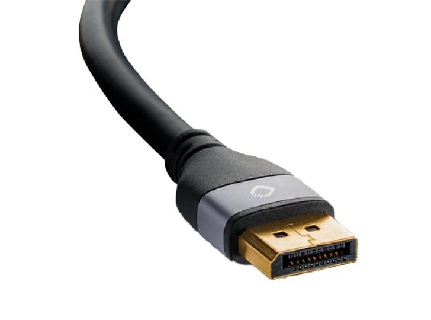
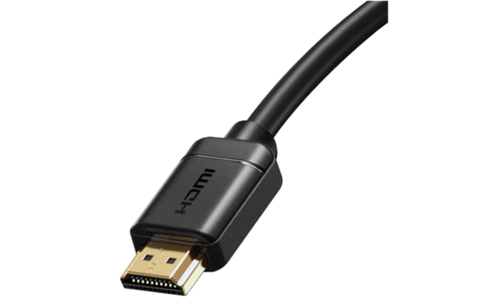

HDMI Display prot VGA DVI HDMI HDMI (High-Definition Multimedia Interface) je digitální rozhraní, které se často používá pro přenos audiovizuálního signálu mezi zařízeními, jako jsou televize, monitory, herní konzole, počítače a další. HDMI podporuje vysoké rozlišení obrazu a kvalitní zvukový přenos. Toto rozhraní je jednoduché a praktické, umožňuje jednoduché propojení zařízení pomocí jednoho kabelu a poskytuje širokou kompatibilitu s různými zařízeními. Display port DisplayPort je také digitální rozhraní, které se používá pro přenos obrazu a zvuku mezi počítačem a monitorovým zařízením. DisplayPort je navržen tak, aby byl vysoce výkonný a podporoval vysoké rozlišení obrazu a aktualizační frekvence. Jednou z výhod DisplayPortu je jeho schopnost propojit více monitorů do jednoho konektoru, což je užitečné pro multitasking nebo herní systémy s více obrazovkami.  Obrázek konektoru(Display port)  Obrázek konektoru(HDMI) VGA VGA (Video Graphics Array) bylo analogové rozhraní, které bylo v minulosti často používáno pro přenos obrazu mezi počítačem a monitorem. VGA bylo běžné ve starších počítačích a monitorech, ale postupně bylo nahrazeno modernějšími digitálními rozhraními. VGA kabely mají typicky modré konektory s 15 kolíky a nabízejí nižší kvalitu obrazu ve srovnání s digitálními rozhraními.